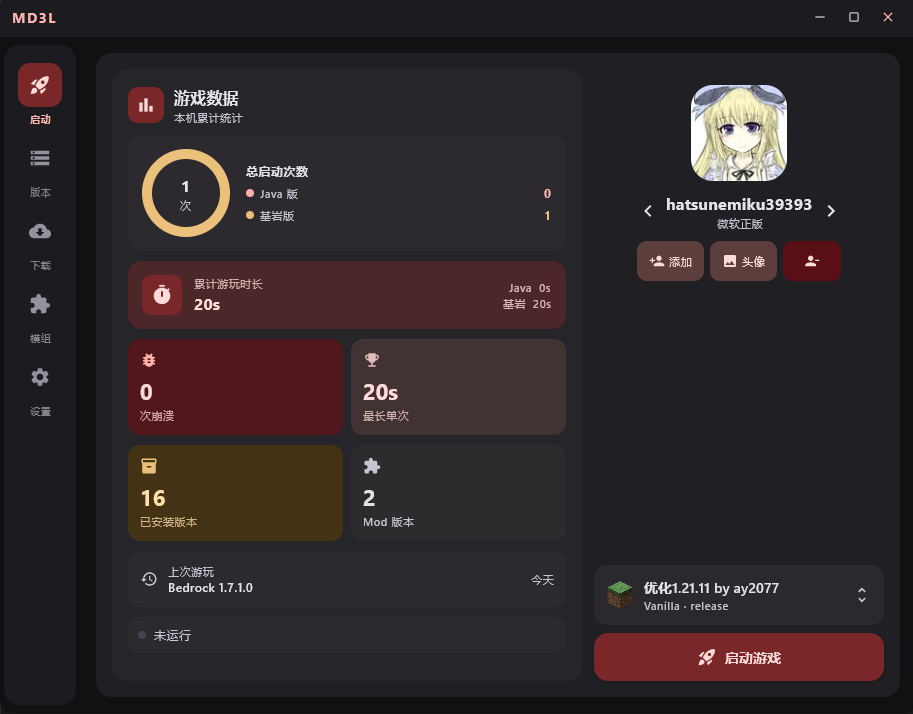
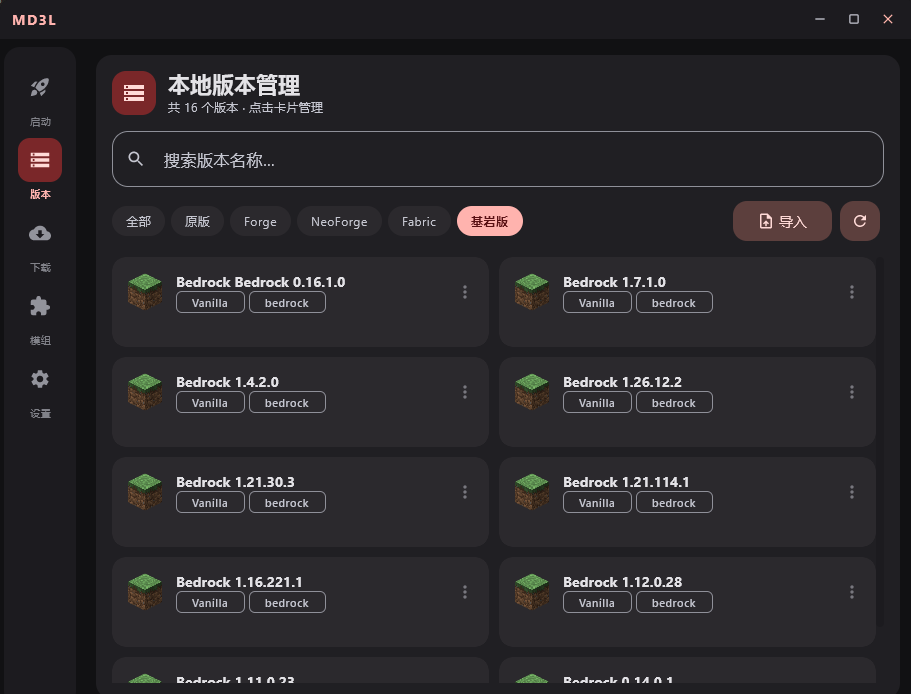
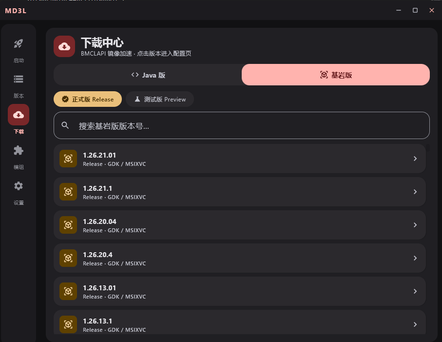
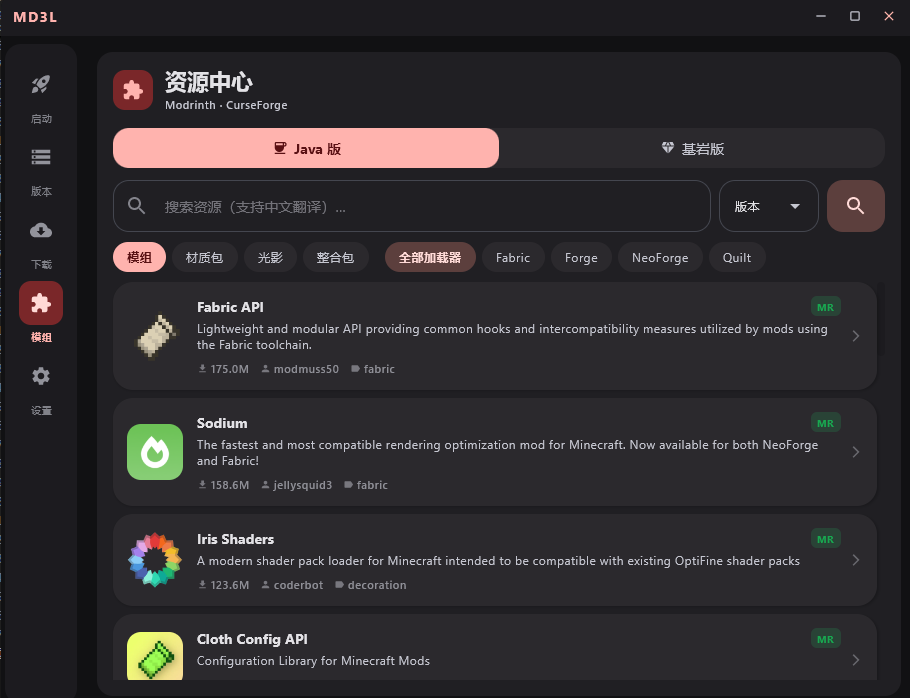
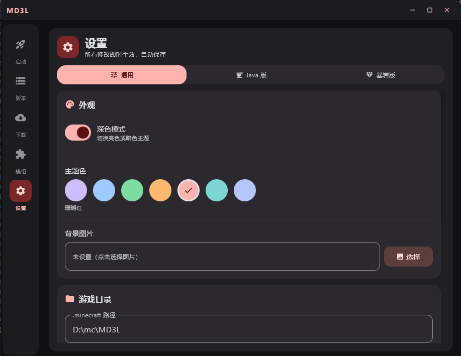

功能特性
MD3L 覆盖 Minecraft 启动全流程，从账号到模组，从下载到自定义，一切触手可及。
核心能力
从 Minecraft 1.0 到最新版本均可下载安装，支持 Forge、NeoForge、Fabric、Quilt 等全部主流加载器，.mrpack 整合包一键导入。
Java Edition通过 MSIX / GDK 直接安装并启动基岩版，支持正式版与预览版混装，版本切换极速；同时兼容本地账号模式，自动处理依赖运行时。
Bedrock Edition支持微软正版账号（OAuth 登录）、离线账号自定义用户名、Yggdrasil 第三方账号（LittleSkin / AuthMe 等），头像皮肤自动抓取并缓存。
账号内置 Modrinth / CurseForge 双源搜索，支持中文关键词自动翻译，可按加载器（Fabric/Forge/NeoForge/Quilt）和类型（模组/光影/材质包/整合包）精确筛选，一键下载安装。
模组多线程并发下载，自动选择 BMCLAPI 等国内镜像源，内置断点续传与失败重试机制，确保游戏资源稳定高速下载。
下载启动时自动检查 GitHub 最新 Release，若有新版本则弹出更新对话框，一键下载安装，无需手动下载覆盖。
更新自动扫描系统已安装的所有 Java，根据游戏版本智能匹配推荐 JRE，也支持手动指定任意 Java 路径。
Java所有账号、设置、崩溃日志等数据存储在启动器同目录下的 data 文件夹，完全便携，旧版 ~/.md3l 数据首次启动自动迁移。
便携深色 / 亮色模式一键切换，内置多种主题配色供选择，支持设置自定义背景图片，遵循 Material Design 3 动态色彩规范。
外观直接将 .mrpack、.zip 整合包文件拖拽到启动器窗口即可触发导入流程，支持管理员权限下的拖拽兼容处理。
易用性游戏崩溃时自动捕获并保存完整 JVM 日志，基岩版崩溃日志同步记录，方便排查问题或反馈给开发者。
调试启动器请求管理员权限运行，确保基岩版 MSIX 安装、运行时配置等操作顺利完成，无需手动右键以管理员身份运行。
系统界面展示

首页
启动界面左侧展示本机累计统计：Java / 基岩版启动次数圆环图、累计游玩时长、重崩次数、最长单次时长；右侧账号切换与一键启动，黄金比例布局信息一目了然。

版本
统一管理 Java 版与基岩版所有已安装版本，支持按加载器筛选、搜索、导入 .mrpack 整合包，每个版本独立存档隔离，点击卡片进入详细管理。

下载
Java 版与基岩版统一管理，BMCLAPI 镜像加速，正式版 / 测试版 / 预览版任意切换，搜索版本号快速定位，一键安装。

模组
接入 Modrinth / CurseForge，支持中文自动翻译搜索，可按加载器和资源类型精确筛选，点击卡片查看详情并下载安装到目标版本。

设置
深色 / 亮色模式切换，多种主题配色随心选，背景图片自定义，Java / 基岩版超高级选项完整覆盖 GC 调优、游戏行为注入、版本管理，所有修改即时生效自动保存。
对比
| 功能 | MD3L | PCL2 | HMCL |
|---|---|---|---|
| Java 版启动 | ✓ | ✓ | ✓ |
| 基岩版启动 | ✓ | ✗ | ✗ |
| 模组资源中心 | ✓ | ✓ | ✓ |
| 中文搜索翻译 | ✓ | ✗ | ✗ |
| Yggdrasil 第三方账号 | ✓ | ✓ | ✓ |
| Material Design 3 界面 | ✓ | ✗ | ✗ |
| 便携数据目录 | ✓ | 部分 | 部分 |
| 完全免费开源 | ✓ | ✗ | ✓ |